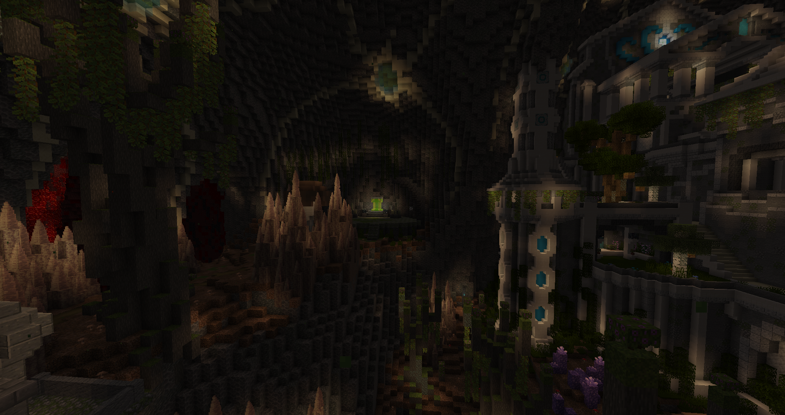
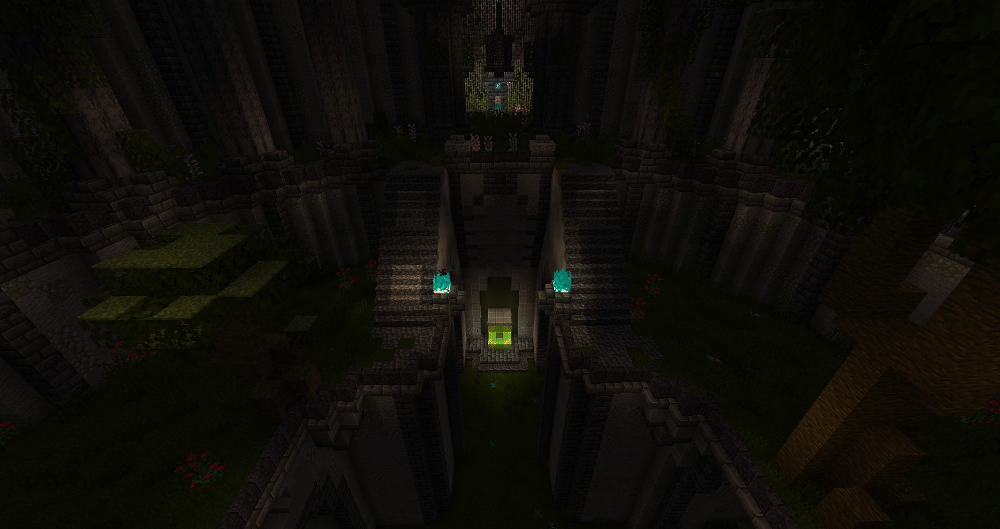
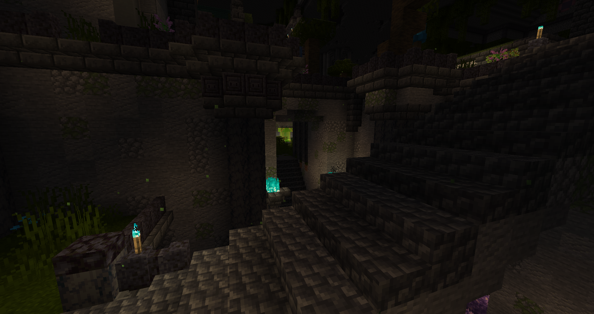
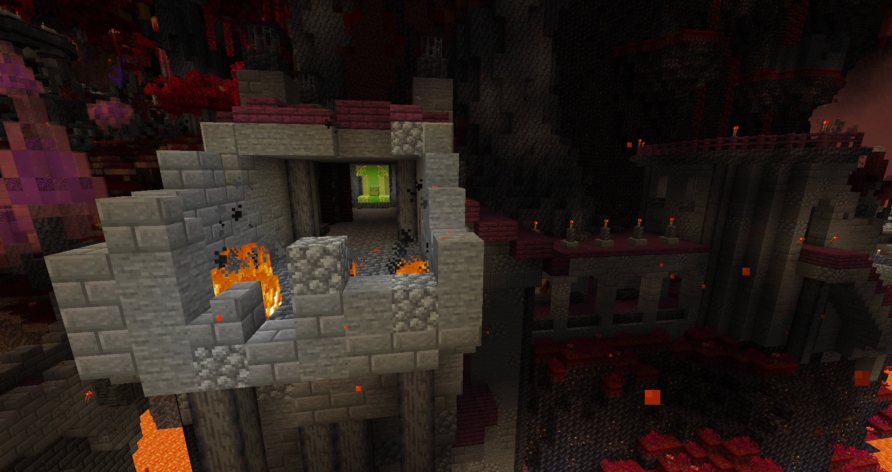
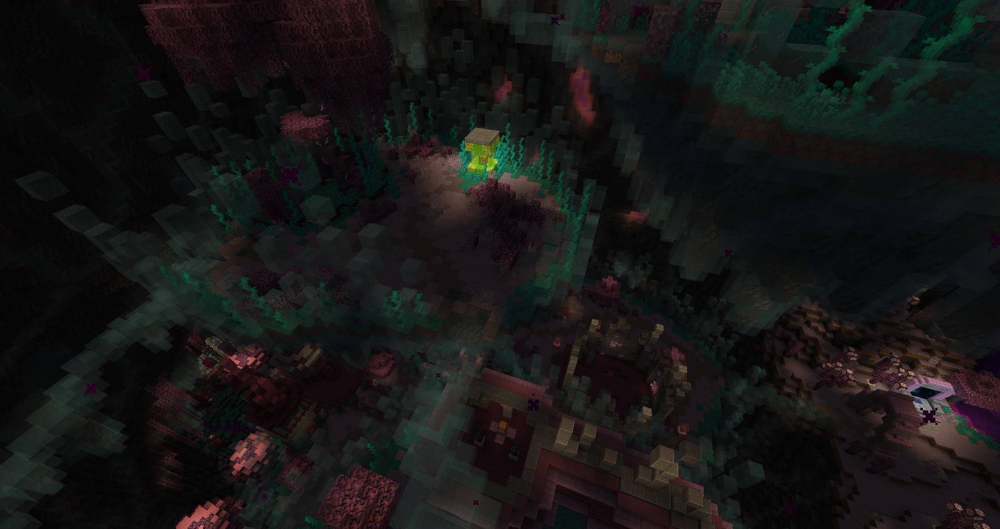
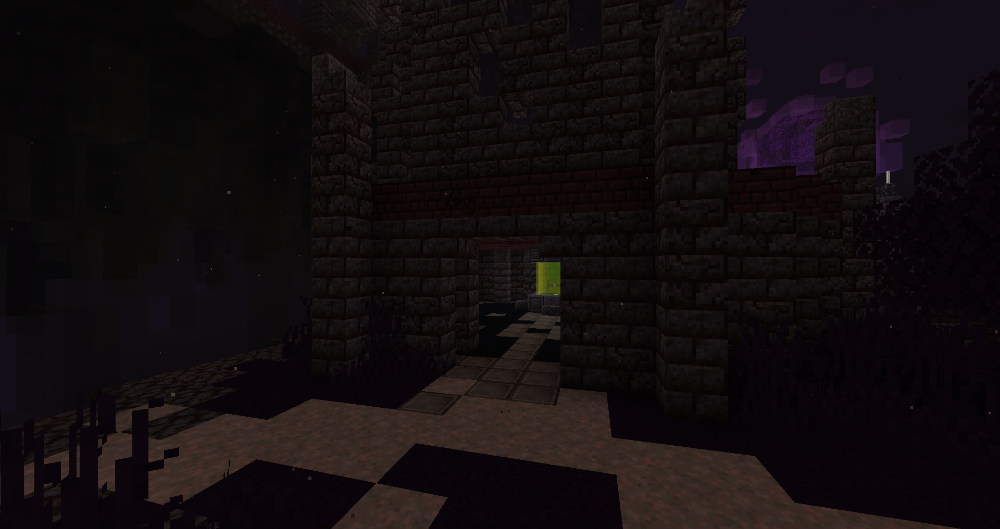
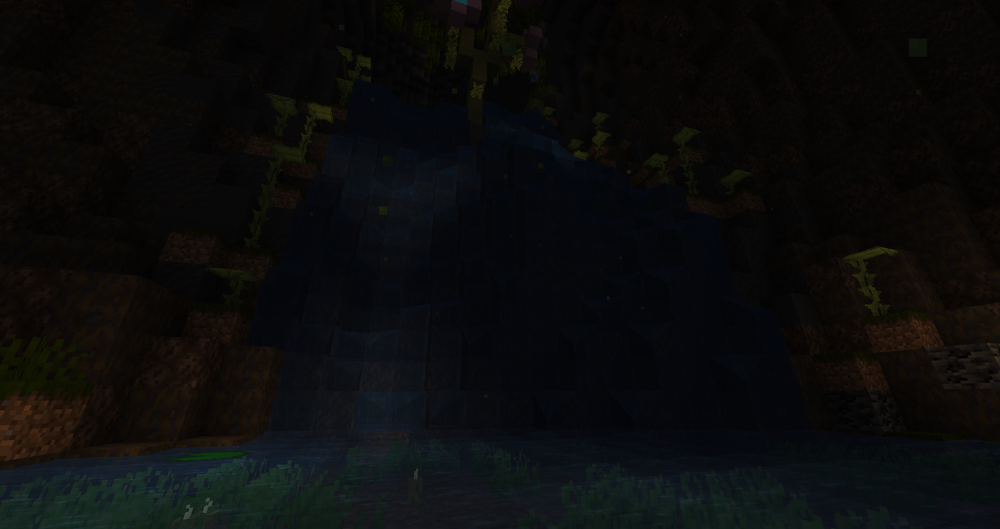

Map Author: heliceo & Suso
Origin: Map Link
Versions: MC = 1.20.1 - Map = 1.1.3
Total: 113 Emeralds
Please only use this sheet in full awareness, exploring is fun and rewarding.
White - 6 Emeralds
Atop the first ruins on the path.

In the ruins after climbing the waterfall.
To the left of the Paralyzing Potion chest at the bottom of the ravine.

Midway through the climb after the locked door with Shade.
Past the pond at the bottom of the ravine in The Nexus.
Past the tree bridge at the end of Reeking Ravine.
Orange - 5 Emeralds (11) - 1 Rune Keeper
In a side room at the top of the fortress.
In a cavern past a bridge on the other side of the fortress.
Midway in a side cavern past the kitchen in the fortress.
In the training grounds to the right when going down the brewery.
At the very bottom of the brewery.
Rune Keeper to the right from the ledge overlooking Illager’s Keep
Magenta - 8 Emeralds (19) - 1 Rune Keeper
In a small pocket on the left of the forest layer.
Reward for the first riddle, near the previous emerald.
Rune Keeper behind the watchtower on the forest layer.

In a building at the end of the first town layer.
In the right aisle of the castle on the bottom floor.
On the second layer of the library.
In the left aisle of the castle on the first floor.
In the right aisle of the castle next to the crypt.
Inside the room of the Crypt Key.
Light Blue - 10 Emeralds (29) - 1 Rune Keeper
On the left side of the ruins in the jungle.
In a cavern under the ruins in the jungle.
Rune Keeper in a cavern next to the ruins leading to the teleporter.
In a cavern under the bridge to the teleporter.
Reward for defeating Ghorgona, past the ruins in the jungle.
Behind the bastion.
In a ruined building to the right of the bastion.
In the food processing rooms, under the cathedral floor.
On the left of the cathedral room.
At the highest position of the bastion above the objective.
In an upper cavern on the left side of the bastion past a bridge.
Yellow - 8 Emeralds (37) - 1 Rune Keeper
Rune Keeper at the end of the path, coming from above the teleporter or the waterfall near the spider cave in Boombog Bastion’s jungle.
Reward for the second riddle, in an alcove to the right above the area.
Reward for defeating the Runekeepers, to the right of the second riddle.
In the central sunken ruins.
In underwater tunnels next to the central sunken ruins.
In a flooded cavern to the right of the sunken ruins.
In the coral cave from the right path of the statue room.
In rooms above the statue room.
In a side room on the middle floor of the objective room.
Lime - 6 Emeralds (43)
Behind a lone building on the upper layer near the entrance to Gray.
In a small room inside the central forge on the upper layer.
Inside a small building on the middle layer under the entrance to Gray.
In tunnels at the start of the crystal processing chain on the middle layer.
In a small room above support beams on the bottom layer.
At the end of the cavern leading to the ruins locking the next chapter.
Pink - 5 Emeralds (48)
In the left aisle of the ruins on the central island.

In a cave underground near the purple torch at the center of the city ruins.
In a courtyard near the purple torch close to the cavern walls.
In a side room on the bottom floor inside the building at the location of the second key half.
At the end of the path past the obsidian field.
Gray - 4 Emeralds (52)
At the end of the right side on the top layer.
At the end of the interior rooms leading to the middle layer from the top layer.
In a basement inside a building midway through the middle layer.
In the descent leading towards the bottom layer from the middle layer.
Light Gray - 12 Emeralds (64)
Above the wart fields past the town.
Two emeralds as reward for Xin’s Challenge, from going above the wart fields.
Encircled by pillars in front of the Slaughterhouse.
On a small island under the railway to the Copper Mines.
In the upper layers of the Copper Mines.
Following the meat transport chain to the left of the Slaughterhouse.
Behind the large meat grinder.
On the side in the big room of the bloody sewers under the Slaughterhouse.
On the cliffside after escaping the bloody sewers from the top.
In a small room on the bottom floor right side of the Slaughterhouse.
Reward for the third riddle, past a bridge from the right side of the Slaughterhouse.
Cyan - 8 Emeralds (72)
At the end of a cavern leading to the water level at the bottom of the area.

To the left of the palace at the end of the elevated path bordering the area.
At the right corner end of the hanging vines maze, from the first floor of the palace.
To the right from the entrance of the Lower Gardens.

At the bottom floor under the parrot vivarium in the right side of the Lower Gardens.

Under the great water fountain in the far end of the Lower Gardens.
Inside the fish pond in the far right corner of the Lower Gardens.
At the bottom floor under the panda vivarium in the left side of the Lower Gardens.
Purple - 6 Emeralds (78)

In the upper floor of a building next to the bridge leading to Blue.
Inside the second room of the TNT storage, past the bottom floor ruins. Good luck!
Midway inside the middle spire.
Inside the broken spire.
At the top floor of the front spire.
In a small room overlooking the blood pool before the objective room.
Blue - 5 Emeralds (83)
Atop the pillar with a giant orb in front of the Void Arena.
On the overlook towards Purple, in the great island room.
Reward for the fourth riddle, inside the caverns leading to the final chapter at the bottom of the great island room.

On an island midway in the great room.
In the teleporter maze, going forward twice, in the flooded room going left then going up in the glass floors room.
Brown - 7 Emeralds (90)
Three emeralds as reward for defeating the three Void Arenas in Light Gray, Blue, and Brown.
Atop the waterfall in the fields.
To the far left of the Lightless Halls.
To the middle right of the Lightless Halls.
Reward for the fifth riddle, to the right of the theatre stage.
Green - 6 Emeralds (96)
On the path from Purple.
On an overlook midway to the palace.
Frozen in a small building right under the palace.
Inside a room on the side of the sword statue room.
Inside a room next to a courtyard with a giant tree on the far right side of the palace.
In a side room on the left side of the Cathedral of Yaaros.
Red - 12 Emeralds (108)
At the entrance, take the right path and take the levitation pad to the floating island, then enchained atop the tower.

Around the first crystal warden, past the ruins on the suspended bridges.
Past the first crystal warden, on a stray island.
Inside tunnels under the second crystal warden, following a path on the side before the bridge to the third.
Past the bridge under the bridge after the previous emerald.
To the left of the fourth crystal warden, take the levitation pad, and circle the island.
Going down the path left of the second teleporter.
At the end of the right aisle of the citadel, under the stairs.
Following the side path from the previous emerald, at the end building on the bottom floor.
At the very top of the citadel, going through the circular stairs in the central room.
Taking the left stairway from the central room, going on the right path to the broken building.
Taking the right stairway from the central room, to the end of the teetering bridge.
Black - 5 Emeralds (113)
In Void Reeking Ravine, midway on the path.
In Void Reeking Ravine, at the end on the upper layer.
In Void Boombog Bastion, at the far end past the bastion.
In Void Obsidian Throne, in a courtyard near the purple torch.

In Void Simulacrum, on the second island inside the second building.
Secrets
Gibbs’ Anguish - The Nexus
On the top floor of the Nexus, past a gravel wall.
The Killager - Magenta
On the middle floor of the library, past a button in a bookshelf.
Agourk’s Bane - Prismarine Empire

Inside a waterfall leading to the teleporter.
ElRich’s Gamble - Prismarine Empire
At the source of the waterfall near the second riddle.
Diving Bell - Prismarine Empire

Inside a waterfall behind a building at the back end.
Lucky Break - Crystal Quarry
Behind grass before going to the bottom layer.
Obsidian Crown - Obsidian Throne
On the side of the throne, behind concrete powder.
Brimstone Blade - Copper Mines
Going up to the source of the lavafall in the main cave.
The Punisher 4.0 - Cannibal Slaughterhouse
In the front window of the Slaughterhouse.
Zombienator 3000 - Simulacrum
Behind a root on the outer ring of the great island room, to the right of the objective.
Paradoxica - House of Horror
Behind a painting on the right stairway.